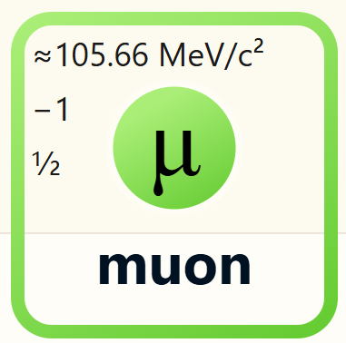

Image Credit: CMS Experiment
< Back
The muon is a subatomic particle similar to the electron but with a much greater mass. It is classified as a lepton and is unstable, decaying into an electron and neutrinos.

Muons are produced in cosmic ray interactions and are used in various scientific applications, including muon tomography. Make sure to check out the many interesting studies involving muons.
Image Credit: CMS Experiment